Fermat's Last Theorem: Unlocking the Secret of an Ancient Mathematical Problem
Amir D. Aczel
1568580770
Over three hundred years ago, a French scholar scribbled a simple theorem in the margin of a book. It would become the world's most baffling mathematical mystery. Simple, elegant, and utterly impossible to prove, Fermat's Last Theorem captured the imaginations of amateur and professional mathematicians for over three centuries. For some it became a wonderful passion. For others it was an obsession that led to deceit, intrigue, or insanity. In a volume filled with the clues, red herrings, and suspense of a mystery novel, Dr. Amir Aczel reveals the previously untold story of the people, the history, and the cultures that lie behind this scientific triumph. From formulas devised for the farmers of ancient Babylonia to the dramatic proof of Fermat's theorem in 1993, this extraordinary work takes us along on an exhilarating intellectual treasure hunt. Revealing the hidden mathematical order of the natural world in everything from stars to sunflowers, Fermat's Last Theorem brilliantly combines philosophy and hard science with investigative journalism. The result: a real-life detective story of the intellect, at once intriguing, thought-provoking, and impossible to put down.
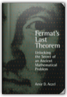
The Dilbert Principle: A Cubicle'S-Eye View of Bosses, Meetings, Management Fads & Other Workplace Afflictions Bys Scott Adams First Edition
Scott Adams
B002K90AIG
FIRST EDITION! DJ has wear but interior is perfect.
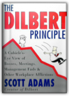
Crashing the Gate: Netroots, Grassroots, and the Rise of People-Powered Politics
Jerome Armstrong, Markos Moulitsas Zuniga
1931498997
Crashing the Gate is a shot across the bow at the political establishment in Washington, DC and a call to re-democratize politics in America.This book lays bare, with passion and precision, how ineffective, incompetent, and antiquated the Democratic Party establishment has become, and how it has failed to adapt and respond to new realities and challenges. The authors save their sharpest knives to go for the jugular in their critique of Republican ideologues who are now running—and ruining—our country.
Written by two of the most popular political bloggers in America, the book hails the new movement—of the netroots, the grassroots, the unorthodox labor unions, the maverick big donors—that is the antidote to old-school politics as usual. Fueled by advances in technology and a hunger for a more authentic and populist democracy, this broad-based movement is changing the way political campaigns are waged and managed.
A must-read book for anyone with an interest in the future of American democracy.
The East Asian Challenge for Human Rights
Joanne R. Bauer, Daniel A. Bell
0521645360
The "Asian values" argument within the international human rights debate holds that not all Asian states should be expected to protect human rights to the same degree. This position of "cultural relativism," often used by authoritarian governments in Asia to counter charges of human rights violations, has long been dismissed by Western and Asian human rights advocates as a weak excuse. This book moves beyond the politicized rhetoric that has dogged the international debate on human rights to identify the more persuasive contributions by East Asian intellectuals. The editors of this book argue that critical intellectuals in East Asia have begun to chart a middle ground between the extreme, uncompromising ends of this argument, making particular headway in the areas of group rights and economic, social, and cultural (ethnic minority) rights. The chapters form a collective intellectual inquiry into the following four areas: critical perspectives on the "Asian values" debate; theoretical proposals for an improved international human rights regime with greater input from East Asians; the resources within East Asian cultural traditions that can help promote human rights in the region; and key human rights issues facing East Asia as a result of rapid economic growth in the region.
Language
Leonard Bloomfield
0226060675
Perhaps the single most influential work of general linguistics published in this century, Leonard Bloomfield's Language is both a masterpiece of textbook writing and a classic of scholarship. Intended as an introduction to the field of linguistics, it revolutionized the field when it appeared in 1933 and became the major text of the American descriptivist school.
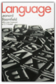
Women on High: Pioneers of Mountaineering
Rebecca A. Brown
192917313X
In a time when a woman¿s sphere was decidedly limited to hearth and family, a number of courageous women were stepping out, stepping up, and making history far from the comforts of the homefire. Mountaineering¿s early days found male climbers garnering praise and admiration for daring summit ascents while women were relegated to the role of faithful observers. But not all women were satisfied with the view from the valley¿ many yearned for the thrill of gazing down on the world from the peaks of Mont Blanc, the Matterhorn, and Mount Washington. In this exciting addition to the literature of mountaineering, journalist Rebecca Brown chronicles the lives and achievements of inspiring women who not only followed in the footsteps of their male counterparts, but often surpassed them. Brown explores the motivations that led such women as Annie Smith Peck, Lucy Walker, and Meta Brevoort to ignore convention, criticism, and censure to become accomplished, respected outdoorswomen whose mountaineering feats are as extraordinary today as they were at the turn of the century. Women on High will thrill armchair adventurers with tales of dangerous summit attempts, blinding white outs, and narrow escapes; transfix mountain historians with details of first ascents, period gear, and first-hand accounts; and captivate anyone who loves a good story about the mountains.
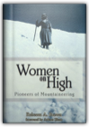
Socialite Evenings
Shobha De
0140122672
Karuna, a prominent Bombay socialite, is trying to flee the nightmare of the present by escaping into the past. An unhappy divorce and a succession of sordid affairs have left her bruised and battered and, in an effort to forget, Karuna begins writing her memoirs. As the story of her life unfolds we see how the gauche middle-class girl metamorphoses into a star—and we also meet her friends and enemies: neurotic, man-hungry Anjali; gorgeous, vivacious Ritu; trampy, outrageous Si; Abe, who prefers young girls; Varun, a high-profile editor with a penchant for young boys; Krish, the pretentious adman, whose wife actively helps him in his extra-marital affairs; Girish, the art-film maker in search of the perfect 'Shakuntala'...All of these characters and more play out their lives against the backdrop of Bombay—a city unique unto itself...An accomplished first novel by a remarkable writer.
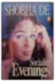
The Onion's Finest News Reporting, Volume 1
Scott Dikkers, The Onion, Robert Siegel, Mike Loew
0609804634
The Onion is the world's most popular humor periodical. Its first book, Our Dumb Century, was a New York Times #1 best-seller and winner of the 1999 Thurber Prize for American Humor. Now The Onion returns with Volume One of the paper's greatest, most hard-hitting stories, including:—Clinton Deploys Vowels to Bosnia: Operation Vowel Storm Will Make Countless Bosnian Names More Pronounceable
—Jesus Christ Returns to NBA
—Microsoft Patents Ones, Zeroes
—I Can't Stand My Filthy Hippy Owner by Thunder the Ferret
One Market Under God: Extreme Capitalism, Market Populism, and the End of Economic Democracy
Thomas Frank
0385495048
In a book that has been raising hackles far and wide, the social critic Thomas Frank skewers one of the most sacred cows of the go-go '90s: the idea that the new free-market economy is good for everyone.Frank's target is "market populism"—the widely held belief that markets are a more democratic form of organization than democratically elected governments. Refuting the idea that billionaire CEOs are looking out for the interests of the little guy, he argues that "the great euphoria of the late nineties was never as much about the return of good times as it was the giddy triumph of one America over another." Frank is a latter-day Mencken, as readers of his journal The Baffler and his book The Conquest of Cool know. With incisive analysis, passionate advocacy, and razor-sharp wit, he asks where we?re headed-and whether we're going to like it when we get there.
Harpercollins Russian Dictionary: Russian English English Russian
HarperCollins, Harper Collins, Marina Hepburn
0062765280
Each of these dictionaries contains more than 70,000 entries and 100,000 translations. Ideal for school, office, and home use, they feature more entries and translations than any comparably sized dictionary; complete current and up-to-date coverage of each language; extensive coverage of practical terminology, including language of computers, business, and medicine; common abbreviations and acronyms; separate sections on pronunciation, verb forms, and numbers.
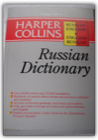
Skeleton Man
Tony Hillerman
0060563443
Hailed as "a wonderful storyteller" by the New York Times, and a "national and literary cultural sensation" by the Los Angeles Times, bestselling author Tony Hillerman is back with another blockbuster novel featuring the legendary Lieutenant Joe Leaphorn and Sergeant Jim Chee.Former Navajo Tribal Police Lieutenant Joe Leaphorn comes out of retirement to help investigate what seems to be a trading post robbery. A simple-minded kid nailed for the crime is the cousin of an old colleague of Sergeant Jim Chee. He needs help and Chee, and his fiancée Bernie Manuelito, decide to provide it.
Proving the kid's innocence requires finding the remains of one of 172 people whose bodies were scattered among the cliffs of the Grand Canyon in an epic airline disaster 50 years in the past. That passenger had handcuffed to his wrist an attaché case filled with a fortune in — one of which seems to have turned up in the robbery.
But with Hillerman, it can't be that simple. The daughter of the long-dead diamond dealer is also seeking his body. So is a most unpleasant fellow willing to kill to make sure she doesn't succeed. These two tense tales collide deep in the canyon at the place where an old man died trying to build a cult reviving reverence for the Hopi guardian of the Underworld. It's a race to the finish in a thunderous monsoon storm to see who will survive, who will be brought to justice, and who will finally unearth the Skeleton Man.
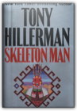
Bury the Chains: Prophets and Rebels in the Fight to Free an Empire's Slaves
Adam Hochschild
0618619070
From the author of the widely acclaimed King Leopold's Ghost comes the taut, gripping account of one of the most brilliantly organized social justice campaigns in history — the fight to free the slaves of the British Empire. In early 1787, twelve men — a printer, a lawyer, a clergyman, and others united by their hatred of slavery — came together in a London printing shop and began the world's first grass-roots movement, battling for the rights of people on another continent. Masterfully stoking public opinion, the movement's leaders pioneered a variety of techniques that have been adopted by citizens' movements ever since, from consumer boycotts to wall posters and lapel buttons to celebrity endorsements. A deft chronicle of this groundbreaking antislavery crusade and its powerful enemies, Bury the Chains gives a little-celebrated human rights watershed its due at last.
Sources of the Holocaust
Steve Hochstadt
0333963458
This new collection of original Holocaust documents and sources brings readers into direct contact with perpetrators and victims. The words of Nazi leaders and common soldiers, SS doctors and European collaborators show how and why they planned and participated in mass murder. Jewish and non-Jewish victims speak of their persecution and resistance. Steve Hochstadt's commentary on each source outlines the historical causes and step-by-step development of the Holocaust, as well as the continuing debates about its significance.
The Philosophical Programmer: Reflections on the Moth in the Machine
Daniel Kohanski
0312186509
Meditative and yet authoritative, The Philosophical Programmer celebrates the creative possibilities of programming while reminding the reader of technology's ethical conundrums. Daniel Kohanski keeps this slim volume rooted in valid examples, providing a rich exploration of the thought process involved in machine code. He treats programming as a language, detailing its elegance and efficiency from the earliest computer inventions to the present day. Because of the book's clear, conversational tone, The Philosophical Programmer can be read cover to cover by nonprogrammers and still be fascinating to knowledgeable veterans.In the preface to The Philosophical Programmer, Kohanski writes, "In the last five years books have flooded the marketplace describing in detail what some computer product does, or how to write programs in some particular language. Yet there has been very little discussion about what programming is and about the meaning of programs for our lives." Kohanski fills that void with The Philosophical Programmer—a rich and engaging history interwoven with well-constructed commentary. —Jennifer Buckendorff
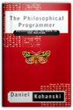
The Structure of Scientific Revolutions
Thomas S. Kuhn
0226458040
The Structure of Scientific Revolutions is a landmark in intellectual history which has attracted attention far beyond its own immediate field. It is written with a combination of depth and clarity that make it an almost unbroken series of aphorisms. Its author, Thomas S. Kuhn, wastes little time on demolishing the logical empiricist view of science as an objective progression toward the truth. Instead he erects from ground up a structure in which science is seen to be heavily influenced by nonrational procedures, and in which new theories are viewed as being more complex than those they usurp but not as standing any closer to the truth. Science is not the steady, cumulative acquisition of knowledge that is portrayed in the textbooks. Rather, it is a series of peaceful interludes punctuated by intellectually violent revolutions . . . in each of which one conceptual world view is replaced by another.
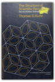
Uniform Justice: A Commissario Guido Brunetti Mystery
Donna Leon
0871139030
As Uniform Justice opens, Venetian detective Commissario Guido Brunetti is called to investigate a parent's worst nightmare. A young cadet has been found hanged, a presumed suicide, in Venice's elite military academy. Brunetti's sorrow for the boy, so close in age to his own son, is rivaled only by his contempt for a community that is more concerned with protecting the reputation of the school, and its privileged students, than understanding this tragedy. The young man is the son of a doctor and former politician, a man of an impeccable integrity all too rare in Italian politics. Dr. Moro is clearly and understandably devastated by his son's death; but while both he and his apparently estranged wife seem convinced that the boy's death could not have been suicide, neither appears eager to talk to the police or involve Brunetti in any investigation of the circumstances in which he died. As Brunetti pursues his inquiry, he is faced with a wall of silence. Is the military protecting its own? And what of the other witnesses? Is this the natural reluctance of Italians to involve themselves with the authorities, or is Brunetti facing a conspiracy far greater than this one death?

1776
David McCullough
0743226720
In this masterful book, David McCullough tells the intensely human story of those who marched with General George Washington in the year of the Declaration of Independence — when the whole American cause was riding on their success, without which all hope for independence would have been dashed and the noble ideals of the Declaration would have amounted to little more than words on paper.Based on extensive research in both American and British archives, 1776 is a powerful drama written with extraordinary narrative vitality. It is the story of Americans in the ranks, men of every shape, size, and color, farmers, schoolteachers, shoemakers, no-accounts, and mere boys turned soldiers. And it is the story of the King's men, the British commander, William Howe, and his highly disciplined redcoats who looked on their rebel foes with contempt and fought with a valor too little known.
At the center of the drama, with Washington, are two young American patriots, who, at first, knew no more of war than what they had read in books — Nathanael Greene, a Quaker who was made a general at thirty-three, and Henry Knox, a twenty-five-year-old bookseller who had the preposterous idea of hauling the guns of Fort Ticonderoga overland to Boston in the dead of winter.
But it is the American commander-in-chief who stands foremost — Washington, who had never before led an army in battle. Written as a companion work to his celebrated biography of John Adams, David McCullough's 1776 is another landmark in the literature of American history.
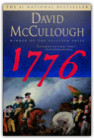
Anarchy, Protest, and Rebellion: And the Counterculture That Changed America
Gloria S. McDarrah, Timothy S. McDarrah
1560255420
In a work of defiant ambition culled from over 5,000 photographs, Fred W. McDarrah's Sixties presents America's most tumultuous decade through the eyes of one man. As staff photographer for the leading counterculture weekly the Village Voice, McDarrah was everywhere—and he photographed everything and everybody. From the 1968 Democratic National Convention in Chicago to the Newark riots; from the Beatles' first American press conference to Andy Warhol's Factory; from Woodstock to the closing of the Fillmore East; from Broadway to Stonewall to Harlem to City Hall, Fred's award-winning pictures capture the struggle and the promise of the sixties and define a generation. Many of these photographs have never been published, or were seen only once in the Village Voice, where for forty years McDarrah ran the photo desk. A number of his portraits, like those of Allen Ginsberg, Bob Dylan, and Abbie Hoffman, have become some of the most celebrated icons of their subjects. These pictures represent a depth and breadth of public and private events and emotions, a view both political and startlingly intimate that is rarely found in the work of one man—a powerful synthesis of American photojournalism, cultural and political documentary and, despite McDarrah's modest protestations, art.
The Best Democracy Money Can Buy: The Truth About Corporate Cons, Globalization and High-Finance Fraudsters
Greg Palast
0452283914
"Palast is astonishing, he gets the real evidence no one else has the guts to dig up." Vincent Bugliosi, author of None Dare Call it Treason and Helter Skelter Award-winning investigative journalist Greg Palast digs deep to unearth the ugly facts that few reporters working anywhere in the world today have the courage or ability to cover. From East Timor to Waco, he has exposed some of the most egregious cases of political corruption, corporate fraud, and financial manipulation in the US and abroad. His uncanny investigative skills as well as his no-holds-barred style have made him an anathema among magnates on four continents and a living legend among his colleagues and his devoted readership. This exciting collection, now revised and updated, brings together some of Palast's most powerful writing of the past decade. Included here are his celebrated Washington Post exposé on Jeb Bush and Katherine Harris's stealing of the presidential election in Florida, and recent stories on George W. Bush's payoffs to corporate cronies, the payola behind Hillary Clinton, and the faux energy crisis. Also included in this volume are new and previously unpublished material, television transcripts, photographs, and letters.
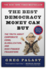
Winterdance: The Fine Madness of Running the Iditarod
Gary Paulsen
0156001454
Paulsen and his team of dogs endured snowstorms, frostbite, dogfights, moose attacks, sleeplessness, and hallucinations in the relentless push to go on. Map and color photographs.
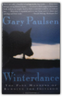
A History of Russia
Nicholas V. Riasanovsky
0195121791
Widely acclaimed as the best one-volume survey text available, A History of Russia presents the whole span of Russia's history, from the origins of the Kievan state and the building of an empire, to Soviet Russia, the successor states, and beyond. Drawing on both primary sources and major interpretive works, this sixth edition updates its existing coverage of the social, economic, cultural, political and miliary events of Russia's past and includes a new chapter on the post-Gorbachev era as well as helpful updated biblipgraphies and reading source lists.Examining contemporary issues such as the rise of Yeltsin, the nationalities question, and Russia's attempts to market capitalism, this sixth edition takes the study of Russia straight into the new millennium, continuing A History of Russia's nearly forty-year track record as the leader in the field.
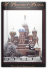
The Man Who Mistook His Wife For A Hat: And Other Clinical Tales
Oliver Sacks
0684853949
In his most extraordinary book, "one of the great clinical writers of the 20th century" (The New York Times) recounts the case histories of patients lost in the bizarre, apparently inescapable world of neurological disorders. Oliver Sacks's The Man Who Mistook His Wife for a Hat tells the stories of individuals afflicted with fantastic perceptual and intellectual aberrations: patients who have lost their memories and with them the greater part of their pasts; who are no longer able to recognize people and common objects; who are stricken with violent tics and grimaces or who shout involuntary obscenities; whose limbs have become alien; who have been dismissed as retarded yet are gifted with uncanny artistic or mathematical talents.If inconceivably strange, these brilliant tales remain, in Dr. Sacks's splendid and sympathetic telling, deeply human. They are studies of life struggling against incredible adversity, and they enable us to enter the world of the neurologically impaired, to imagine with our hearts what it must be to live and feel as they do. A great healer, Sacks never loses sight of medicine's ultimate responsibility: "the suffering, afflicted, fighting human subject."
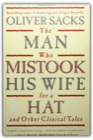
What is the Name of This Book? The Riddle of Dracula and Other Logical Puzzles
Raymond Smullyan
0671628321
In his most critically acclaimed work, a celebrated mathematician presents more than 200 increasingly complex and challenging problems — puzzles that delve into some of the deepest paradoxes of logic and set theory. Solutions. "The most original, most profound, and most humorous collection of recreational logic and math problems ever written." — Martin Gardner.
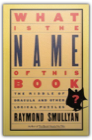
Shadow of the Silk Road
Colin Thubron
0061231770
To travel the Silk Road, the greatest land route on earth, is to trace the passage not only of trade and armies but also of ideas, religions, and inventions. Making his way by local bus, truck, car, donkey cart, and camel, Colin Thubron covered some seven thousand miles in eight months—out of the heart of China into the mountains of Central Asia, across northern Afghanistan and the plains of Iran into Kurdish Turkey—and explored an ancient world in modern ferment.
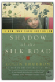
War and Peace
Leo Tolstoy, George Gibian
039396647X
The text of this revised Norton Critical Edition of Leo Tolstoy’s epic novel is based on the Louise and Aylmer Maude translation. The editor has made revisions where appropriate; the annotations have also been revised and expanded. Three maps of Napoleon’s campaigns and battles in Russia are included, making the military aspects of the novel easier to follow."Backgrounds and Sources" includes the publication history of War and Peace, selections from Tolstoy’s letters and diaries as well as three drafts of his introduction to the novel that elucidate the its evolution, and an 1868 article by Tolstoy in which he reacts to his critics."Criticism" includes twenty essays, seven of them new, that provide diverse perspectives on the novel by Nikolai Strakhov, V. I. Lenin, Henry James, Isaiah Berlin, D. S. Mirsky, Kathryn Feuer, Lydia Ginzburg, Richard Gustafson, Gary Saul Morson, and Caryl Emerson, among others.
A Chronology and Selected Bibliography are also included.
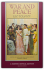
The Everything Homebuying Book: All the Ins and Outs of Making the Biggest Purchase of Your Life
Mark B. Weiss, Ruth Rejnis
1580628095
Does the idea of buying your own home send shivers down your spine? Are you intimidated by the prospect of selecting the right home, meeting the financial obligations of ownership, and ensuring the security of your investment? Rest assured, you are not alone.The Everything® Homebuying Book, 2nd Edition is specially designed for anyone who is overwhelmed by this daunting process. It takes you step by step through the process and provides practical advice for getting the most for your money and making the right decisions for you and your family. This completely revised and updated edition of The Everything® Homebuying Book gives you the information you need to avoid costly mistakes and save thousands of dollars.
Features:
·Advice on choosing the right house, condo, co-op, or vacation home
·Up-to-date information on mortgage rates, property values, and market trends
·Guidelines for working with agents, brokers, lawyers, and lenders
·Advice on financing options and making a down payment
·Easy-to-follow instructions for choosing and securing the right mortgage
·Tips for negotiating and getting more for your money
Whether you are buying your first home or your fourth, The Everything® Homebuying Book, 2nd Edition walks you through the biggest purchase of your life with expert advice you can trust.